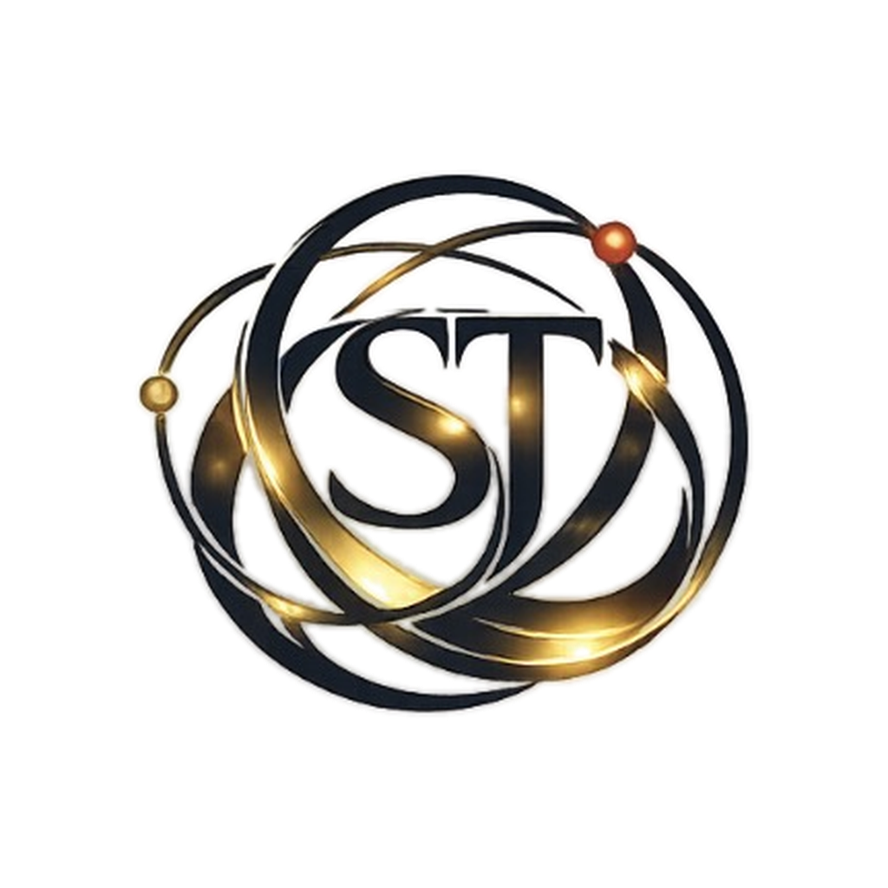

01
問題結構診斷
幫企業拆解目前問題來自流程、資料、組織、外部環境，還是決策順序。

很多企業想導入 AI、重整流程、改善決策效率，卻在第一步就卡住。問題可能不在工具本身，而在資料來源、流程責任、部門交接、現場回報與決策順序尚未整理清楚。
源序流協助企業先看清楚問題結構，再判斷哪一條路徑值得優先驗證。
想做 AI，但不確定該先做工具、資料、流程，還是先定義問題。
每個部門都知道一部分，但整體責任與資料流沒有接起來。
技術、管理、現場與客戶端語言不同，導致決策反覆延遲。
方向很多，但不知道哪一步該先做、哪一條路應該暫緩。
不是沒有努力，而是測試順序與失敗原因沒有被有效整理。
幫企業拆解目前問題來自流程、資料、組織、外部環境，還是決策順序。
協助判斷哪些環節值得先驗證，哪些投入可以暫緩，避免一開始就大規模試錯。
在正式導入 AI 或系統前，先整理需求、資料欄位、驗證目標與風險邊界。
我們會先協助整理問題現況、可能根因、優先驗證順序與適合的合作方式。若問題適合展開，再進入 PoC、顧問專案或長期陪跑。
先找到目前位置，再決定下一步該做診斷、整理流程、啟動 PoC，還是導入系統。不是每間企業都適合一開始就導入大型 AI 系統；如果階段錯配，常見結果不是升級，而是預算、資料與流程一起失控。
| 目前層級 | 您可能的狀況 | 常見風險 | 建議先做什麼 | 源序流可協助什麼 |
|---|---|---|---|---|
| L1 人工經驗 | 流程靠人、資料零散，只是偶爾使用免費或簡單 AI 工具。 | 把 AI 當問答工具，無法形成真正流程改善。 | 先整理高頻、重複、耗時的工作節點。 | 協助盤點哪些流程最值得先被結構化。 |
| L2 工具試用 | 已有同仁用 AI 做文案、客服、摘要或資料整理。 | 工具越來越多，但流程、責任與輸出標準沒有變清楚。 | 挑出一個可重複任務，建立標準輸入與輸出。 | 協助設計最小可用流程與檢核欄位。 |
| L3 小型導入 | 想導入 CRM、小型自動化、報表或內部工具。 | 需求尚未定義清楚，容易買到不適合的系統。 | 先確認資料欄位、使用者角色與決策用途。 | 協助做導入前需求診斷與工具選型邊界。 |
| L4 流程整合 | 已有基礎系統，但跨部門流程、SOP、資料交接仍卡住。 | 系統存在，責任不清；資料有了，卻不能支持決策。 | 先釐清部門交接、例外處理與升級規則。 | 協助建立問題結構圖與優先修復順序。 |
| L5 大型導入前 | 準備導入 IoT、影像辨識、AI 監控或自動化平台。 | 成本高，一旦問題定義錯誤，錯路徑也會被放大。 | 先做 PoC 前置診斷，不急著全面建置。 | 協助確認 PoC 範圍、資料需求與風險邊界。 |
| L6 決策仍卡住 | 已經有系統與資料，但重大決策、異常追蹤或流程修復仍反覆卡住。 | 技術能做很多事，但團隊不一定知道下一步最值得做什麼。 | 先判斷優先路徑、責任邊界與回寫機制。 | 協助建立決策節奏、驗證順序與定期回顧框架。 |
以下為去識別化企業情境演繹，保留真實決策邏輯，不揭露公司名稱、內部資料與合作細節。
客戶原本想導入 IoT、AI 監控或自動化系統，提升現場效率。我們先協助判斷：現場問題是否已經被定義？哪些資料真的會被用來決策？異常發生時，是設備問題、流程交接問題，還是管理回報節點不清楚？
客戶原本以為要多試幾組配方，但真正風險可能藏在配方、製程、包材與保存條件的交互影響。我們先協助整理既有失敗樣本、分類失敗原因，判斷哪些測試值得優先做，哪些方向可以暫緩。
客戶希望提高續班率，並用 AI 定期產出學生學習追蹤報告。我們先協助判斷：學生流失是因為沒有進步，還是家長沒有看見進步？老師是否能穩定記錄學生狀態？AI 報告要寫什麼，才不是漂亮但空泛的文字？
企業主面對 AI 轉型、新事業線、市場切入或組織調整時，需要的不只是建議，而是可被追蹤的行動節奏。
目前狀態：可啟動，但不建議全面投入。建議先用 90 天節奏驗證市場、資源與團隊執行能力。
P1｜立即啟動：先建立 90 天行動節奏，明確定義第一週、第一個月與第三個月的必要任務。
P2｜補資料後觀察：市場切入、資源配置與合作窗口需要再確認，避免太早放大預算。
P3｜暫緩投入：大型系統導入、全面組織調整與高成本自動化，建議等第一輪驗證後再決定。
30 天檢查點：確認是否取得第一批客戶回饋、是否完成最小可驗證任務、是否出現新的風險或資源缺口。
90 天檢查點：判斷是否進入加速、轉向、縮小範圍或暫停部分支線。
源序流的形成，來自長期在企業決策、工程治理與現場運作中的觀察。
我們發現，多數企業問題表面上看起來是工具、流程或人員問題，實際上常常是「問題尚未被正確定義」，導致後續投入方向錯誤，進而增加時間、人力與成本。
因此，我們不是直接提供工具或系統，而是先協助企業釐清問題結構，判斷影響決策的關鍵因素，並排序最值得優先驗證的路徑。
讓每一步投入，都建立在可理解、可驗證的基礎之上。
協助企業將目前分散的問題、資訊與決策依據整理成可理解的結構，釐清問題真正來源，而不是只處理表面現象。
結合工程治理與供應鏈實務經驗，檢視流程、規格與責任邊界，避免決策與實際執行之間產生落差。
在規劃方案時，同步考量部門協作、資源條件與執行阻力，讓決策不只正確，也能真正落地。
若您的企業正在評估 AI 導入、流程重整、PoC、產品研發、重大決策或跨部門協作問題，可以先填寫初步診斷表單。我們會依據公司名稱、稱呼、頭銜、聯繫方式與希望解決的議題，判斷是否適合進一步討論。